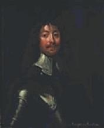

The Cameronian Cat
Le Chat Caméronien
Covenanters and Puritans - Covenantaires et Puritains
From James Hogg's "Jacobite Relics" volume I
- Song 22 - page 209 (published in 1819)
Tune
Hymn "Irish"
Sequenced by Christian Souchon

James Graham, 5 Earl of Montrose (1612 - 1650), For some times leader of the Covenanters
{kind=link}

|
1. There was a
Cameronian
cat
Was hunting for a prey, And in the house she catch'd a mouse, Upon the Sabbath-day. 2. The Whig , being offended At such an act profane, Laid by his book, the cat he took, And bound her in a chain. 3. "Thou damn'd, thou cursed creature, This deed so dark with thee, Think'st thou to bring to hell below, My holy wife and me? 4. "Assure thyself, that for the deed Thou blood for blood shalt pay, For killing of the Lord's own mouse Upon the Sabbath-day." 5. The presbyter laid by the book, And earnestly he pray'd, That the great sin the cat had done Might not on him be laid. 6. And straight to execution Poor baudrons she was drawn, And high hang'd up upon a tree; Mess John he sung a psalm. 7. And when the work was ended, They thought the cat near dead; She gave a paw, and then a mew, And stretched out her head. 8. "Thy name," said he, "shall certainly A beacon still remain, A terror unto evil ones, For evermore. Amen." |
1. C'était un chat
Caméronien
Qui pourchassait les rats, Et voilà qu'il en attrape un Par un jour de Sabbat. 2. Par un tel acte impie le Whig Aussitôt offensé, A posé son missel et mis A son chat un collier. 3. "Créature de Lucifer, Voilà, noir comme toi, Un acte vouant à l'enfer, Ma sainte femme et moi! 4. "Il te faudra pour ce forfait Payer le prix du sang: Le rat de Dieu, tu l'as tué! C'était Sabbat pourtant." 5. Et le Presbytérien posa, Son missel pour prier. Que l'horrible péché du chat Ne le fasse damner. 6. Et sans faire plus de discours Il traîne le minet, Qu'à cet arbre il pend haut et court En chantant des motets. 7. Quand il eut chanté tout son saoûl, Et qu'on crut mort le chat, D'un coup de patte et d'un miaou, Minet se dégagea. 8. "Ton nom", dit John, "soit, de ce jour, Pour ceux que le Mal mène Un grave avertissement pour L'éternité. Amen." (Trad. Ch.Souchon (c) 2006) |
|
Note By Hoggs:
"This is another popular country song, and very old. It is by some called The Presbyterian Cat, but generally as above; and is always sung by the wags in mockery of the great pretended strictness of the Covenanters , which is certainly, in some cases, carried to an extremity rather ludicrous. I have heard them myself, when distributing the sacrament, formally debar from the table the king and all his ministers; all witches and warlocks; all who had committed or attempted suicide; all who played at cards and dice; all the men that had ever danced opposite to a woman, and every woman that had danced with her face toward a man; all the men who looked at their cattle or crops, and all the women who pulled green kail or scraped potatoes, on the Sabbath-day; and I have been told, that in former days they debarred all who used fanners for cleaning their oats, instead of God's natural wind. The air is very sweet, but has a strong resemblance to one of their popular psalm- tunes.[--As well it might, for it is none other than the old tune "Irish" .]"
The true words of the prayer read thus:
The night that he was born: "It's blessing on your curly hair..."
For "Cameronians", see footnote to
Sherrifmuir
|
Note de Hoggs:
"Voici une autre chanson de paysans très connue et très ancienne. On l'appelle parfois 'Le Chat Presbytérien' , mais le présent titre est plus courant; et elle est toujours chantée par des plaisantins pour se moquer du puritanisme exagéré qu'affectent les Covenantaires , et qui les conduit parfois à des excès plutôt ridicules. Il m'est arrivé de les entendre, lors de la communion, interdire formellement l'accès de la table sainte, au roi et à tous ceux qui le servent; à toutes les sorcières et sorciers; à tous ceux qui ont réussi ou tenté leur suicide; à tous ceux qui jouent aux cartes ou aux dés; à tous les hommes qui ont jamais dansé face à une femme et à toute femme ayant jamais dansé face à un homme; à tous les hommes qui s'occupent de leurs bêtes ou de leurs récoltes et aux femmes qui épluchent leurs choux ou leurs patates le jour du Sabbat; et l'on m'a dit qu'autrefois ils excluaient aussi tous ceux qui utilisaient un appareil pour éventer leur orge plutôt que le vent que Dieu à créé dans la nature. L'air de la chanson est très joli et ressemble à s'y méprendre à l'un de leurs psaumes préférés [ce qui n'est pas étonnant car ce dernier n'est autre que la vieille mélodie "Irish" .]"
Les véritables paroles de la prière sont:
La nuit où il naquit: "Tes cheveux bouclés soient bénis..."
Pour "Caméroniens" cf note annexée à
Sherrifmuir
|